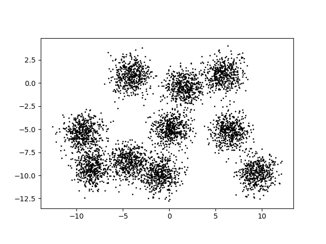
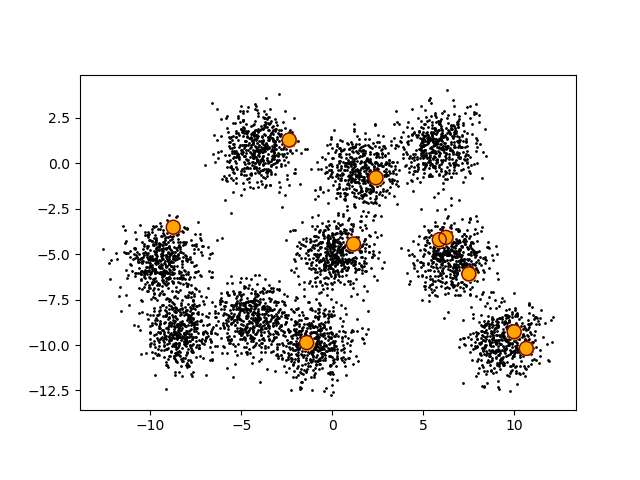
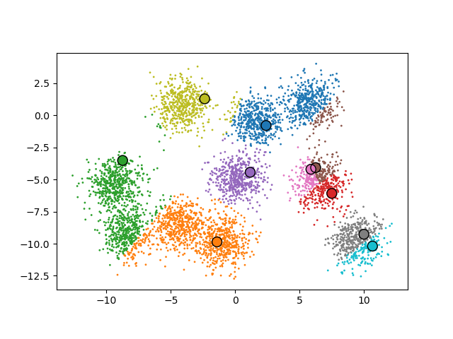
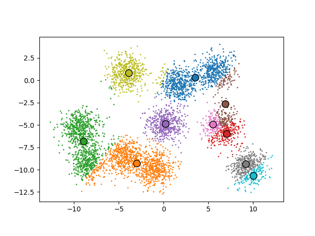
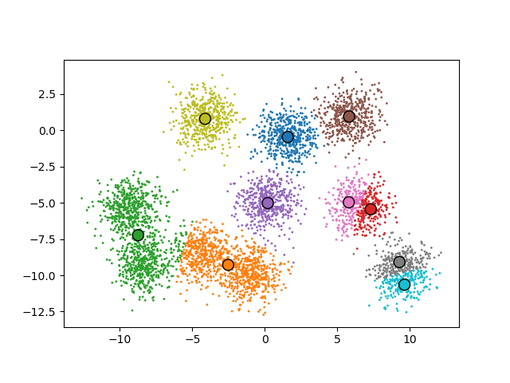
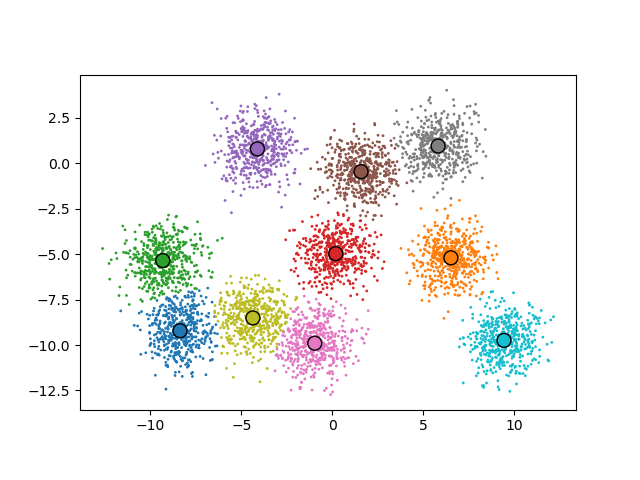
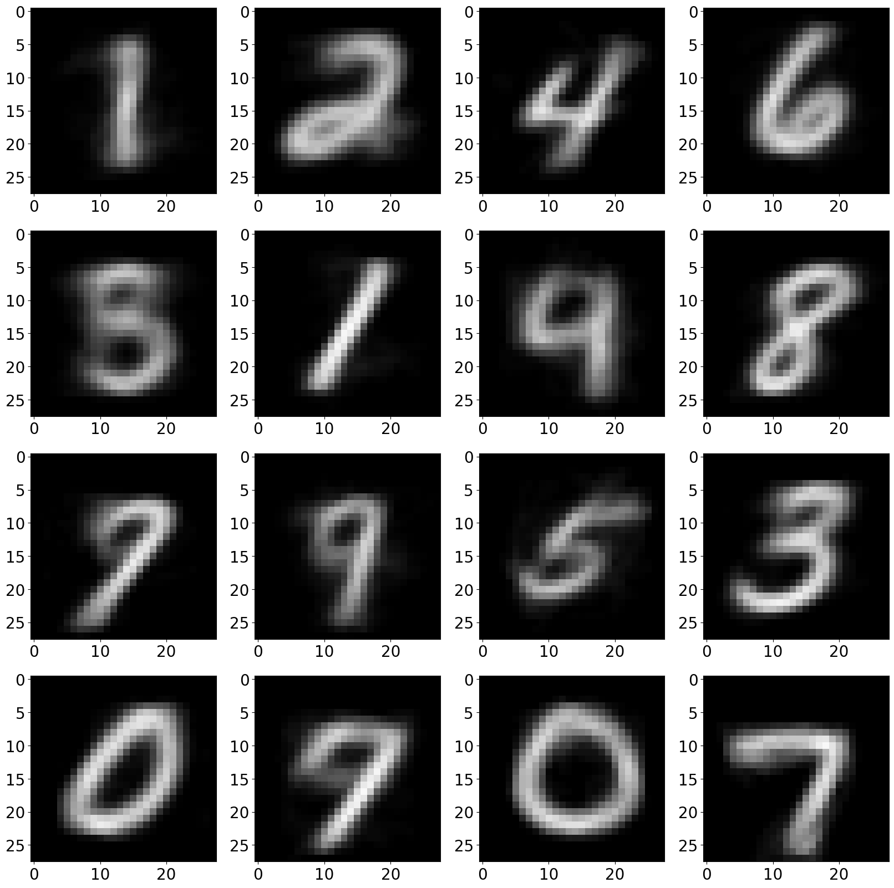

k-Means Clustering
Suppose we are given \(n\) points
\[ \mathbf{p}_1,\mathbf{p}_2,\ldots,\mathbf{p}_n \in \mathbb{R}^d. \]
The goal of \(k\)-means clustering is to partition the points into \(k\) clusters
\[ C_1,C_2,\ldots,C_k \]
so that points belonging to the same cluster are close together.
For each cluster \(C_j\), define its centroid
\[ \boldsymbol{\mu}_j = \frac{1}{|C_j|} \sum_{i\in C_j}\mathbf{p}_i. \]
The \(k\)-means cost is
\[ \operatorname{cost}(C_1,\ldots,C_k) = \sum_{j=1}^{k} \sum_{i\in C_j} \left\|\mathbf{p}_i-\boldsymbol{\mu}_j\right\|^2. \]
Thus, \(k\)-means seeks clusters that minimize the total squared distance between each point and the centroid of its cluster.
Finding an optimal \(k\)-means clustering is computationally difficult. In fact, the \(k\)-means problem is NP-hard. In practice, a commonly used method is Lloyd’s algorithm, an iterative algorithm that repeatedly improves a set of cluster centers.
Lloyd’s Algorithm
Given \(n\) points \(\mathbf{p}_1,\ldots,\mathbf{p}_n\) in \(\mathbb{R}^d\):
- Choose \(k\) initial cluster centers \(\boldsymbol{\mu}_1,\ldots,\boldsymbol{\mu}_k\).
- Assign each point \(\mathbf{p}_i\) to the cluster whose center is closest to \(\mathbf{p}_i\).
- Replace each center by the centroid of the points assigned to its cluster.
- Repeat steps 2 and 3 until the centers converge.
Lloyd’s algorithm is simple and reasonably efficient, but the final clustering can depend on the initial choice of centers. In particular, Lloyd’s algorithm is not guaranteed to find a globally optimal clustering.
We will address this issue by running Lloyd’s algorithm from several different random initializations and keeping the clustering with the smallest final cost.
We will develop the algorithm incrementally. Although we will initially use a two-dimensional dataset so that we can visualize the clustering, our implementation will work with points in arbitrary dimension from the beginning.
Visualizing the Dataset
We will develop our implementation of Lloyd’s algorithm one step at a time. Although our first dataset contains points in two dimensions, we will write the code from the beginning to work with points in arbitrary dimension.
We will start with the 5000 points in points5k.txt. The first version of our program reads the dataset using NumPy and, when the data is two-dimensional, creates a visualization of the points.
import sys
import numpy as np
import matplotlib.pyplot as plt
if (len(sys.argv) < 3):
print ("command usage: python3",sys.argv[0],"datafile","k","[imagefile]")
sys.exit(1)
data = np.loadtxt(sys.argv[1])
print("data.shape =", data.shape)
print("data.dtype =", data.dtype)
n, d = data.shape
k = int(sys.argv[2])
print ("n =",n," d =",d," k =",k)
if len(sys.argv) > 3:
if d == 2:
plt.gca().set_aspect('equal')
plt.scatter(data[:,0],data[:,1],s=1,color="black")
plt.savefig(sys.argv[3])
else:
print("dimension too high to visualize")Running the program on points5k.txt gives
$ python3 kmeans_v1.py points5k.txt 1 points5k_v1.png
data.shape = (5000, 2)
data.dtype = float64
n = 5000 d = 2 k = 1There are several important pieces of NumPy information in this output. The shape of the array is
data.shape = (5000, 2)so NumPy has represented the dataset as a \(5000\times 2\) array. Each row of data represents one point and each column represents one coordinate. More generally, a dataset containing \(n\) points in \(\mathbb{R}^d\) will have shape
\[ (n,d). \]
This allows us to obtain \(n\) and \(d\) directly from the array:
n, d = data.shapeThe output also tells us that
data.dtype = float64so every entry in the array is stored as a 64-bit floating-point value. Unlike a Python list, a NumPy array has a single data type associated with all of its elements. This is one of the properties that allows NumPy to perform numerical computations efficiently.
Since this particular dataset has \(d=2\), we can visualize the points. NumPy allows us to select an entire column of an array using the : notation. Thus,
data[:,0]contains the \(x\)-coordinate of every point, while
data[:,1]contains the \(y\)-coordinate of every point. These two arrays can be passed directly to plt.scatter.

The two-dimensional dataset is useful because we can see what the clustering algorithm is doing. However, nothing about the way we loaded or stored the data assumes that \(d=2\). Only the visualization is restricted to two dimensions.
The first step of Lloyd’s algorithm is to choose \(k\) initial cluster centers. In the next version, we will choose these centers randomly from the points in the dataset.
Choosing Initial Centers
We see from Figure 1 that there appear to be 10 clusters in this dataset. Thus, we choose \(k\) to be 10.
The first step of Lloyd’s algorithm is to choose \(k\) initial cluster centers. There are many possible ways to choose the initial centers. For now, we will use a simple approach: choose \(k\) different points at random from the dataset and use these points as our initial centers.
In version 2 we add this initialization step.
import sys
import numpy as np
import matplotlib.pyplot as plt
if (len(sys.argv) < 3):
print ("command usage: python3",sys.argv[0],"datafile","k","[imagefile]")
sys.exit(1)
data = np.loadtxt(sys.argv[1])
n, d = data.shape
k = int(sys.argv[2])
print ("n =",n," d =",d," k =",k)
# pick a random subset of points to start with for our centers
seed = 0
np.random.seed(seed)
sample = np.random.choice(np.arange(n),k,replace=False)
print("sample.shape =",sample.shape)
print("sample.dtype =",sample.dtype)
print (sample)
centers = data[sample]
print("centers.shape =",centers.shape)
if len(sys.argv) > 3:
if d == 2:
plt.gca().set_aspect('equal')
plt.scatter(data[:,0],data[:,1],s=1,color="black")
plt.scatter(centers[:,0],centers[:,1],s=100,color="orange");
plt.scatter(centers[:,0],centers[:,1],
facecolors='none',edgecolors='maroon',s=100)
plt.savefig(sys.argv[3])
else:
print("dimension too high to visualize")Running the program gives
$ python3 kmeans_v2.py points5k.txt 10 points5k_v2.png
n = 5000 d = 2 k = 10
sample.shape = (10,)
sample.dtype = int64
[ 398 3833 4836 4572 636 2545 1161 2230 148 2530]
centers.shape = (10, 2)There are several new NumPy ideas in this version. We first create the array
np.arange(n)containing the integers from \(0\) through \(n-1\). These integers are the row indices of the points in data.
We then use
sample = np.random.choice(np.arange(n),k,replace=False)to randomly select \(k\) of these indices. The option
replace=Falseensures that the same point cannot be selected more than once.
The resulting sample array has
sample.shape = (10,)
sample.dtype = int64Unlike data, which is a two-dimensional array of floating-point values, sample is a one-dimensional array of integers. Its entries are indices into the rows of data.
The next line demonstrates an important NumPy indexing operation:
centers = data[sample]Rather than using a single integer to select one row, we use the entire integer array sample to select several rows at once. Since sample contains 10 indices and each row of data contains \(d=2\) coordinates, the resulting array has
centers.shape = (10, 2)More generally, if
\[ \texttt{data.shape}=(n,d) \]
and sample contains \(k\) row indices, then
\[ \texttt{centers.shape}=(k,d). \]
Thus, the \(k\) initial centers are represented by another two-dimensional NumPy array, with one center in each row.
We use a fixed random seed
seed = 0
np.random.seed(seed)so that the program selects the same initial centers each time it is run. This will make it easier to understand and compare the different versions of the algorithm as we develop them.
Finally, since our current dataset is two-dimensional, we can visualize the initial centers along with the data:
plt.scatter(data[:,0],data[:,1],s=1,color="black")
plt.scatter(centers[:,0],centers[:,1],s=100,color="orange")
plt.scatter(centers[:,0],centers[:,1],facecolors='none'edgecolors='maroon',s=100)As in version 1, the first call plots the original data points in black.
The second call plots the initial cluster centers in orange. Since each row of centers contains one center, centers[:,0] and centers[:,1] contain the \(x\)- and \(y\)-coordinates of the centers. We use s=100 to make the centers much larger than the original data points.
The third call plots the centers a second time, this time with no fill color and with a maroon edge. This draws a circle around each center so that the centers are easy to identify in the visualization.

Finding an Initial Clusering
The next step of Lloyd’s algorithm is to assign every point to the cluster associated with its closest center. The initial centers are simply random points from the dataset, so there is no reason to expect them to provide a particularly good clustering but we have to start somewhere.
Version 3 assigns every point to its closest center.
import sys
import numpy as np
import matplotlib.pyplot as plt
if (len(sys.argv) < 3):
print ("command usage: python3",sys.argv[0],"datafile","k","[imagefile]")
sys.exit(1)
data = np.loadtxt(sys.argv[1])
n, d = data.shape
k = int(sys.argv[2])
print ("n =",n," d =",d," k =",k)
# pick a random subset of points to start with for our centers
seed = 0
np.random.seed(seed)
sample = np.random.choice(np.arange(n),k,replace=False)
centers = data[sample]
# cluster the data by grouping points that are closest to the same center
clusters = np.empty(n,dtype="int")
dist_sqs = np.empty(k,dtype="float64")
for i in range(n):
for j in range(k):
diff = data[i]-centers[j]
dist_sqs[j] = np.inner(diff,diff)
clusters[i] = np.argmin(dist_sqs)
# print the number of points in the first cluster
count_0 = np.sum(clusters == 0)
print ("number of points in cluster 0:",count_0)
if len(sys.argv) > 3:
if d == 2:
plt.gca().set_aspect('equal')
plt.scatter(data[:,0],data[:,1],c=clusters,s=1,cmap='tab10')
plt.scatter(centers[:,0],centers[:,1],c=np.arange(k),s=100,cmap='tab10')
plt.scatter (centers[:,0],centers[:,1],facecolors='none',edgecolors='black',s=100)
plt.savefig(sys.argv[3])
else:
print("dimension too high to visualize")Running the program gives
$ python3 kmeans_v3.py points5k.txt 10 points5k_v3.png
n = 5000 d = 2 k = 10
number of points in cluster 0: 882To store the cluster assignment for every point, we create the one-dimensional array
clusters = np.empty(n,dtype="int")The array has \(n\) entries because every point needs one cluster assignment. We use an integer data type because the \(k\) clusters are numbered
\[ 0,1,\ldots,k-1. \]
Notice that we use np.empty rather than np.zeros. We do not need to initialize the entries of clusters because every entry will be assigned a value before it is used.
We also create an array to hold the squared distances from the current point to each of the \(k\) centers:
dist_sqs = np.empty(k,dtype="float64")Again, there is no reason to initialize this array because all \(k\) entries will be overwritten for every point.
For each point data[i], we calculate its squared distance to every center:
for j in range(k):
diff = data[i]-centers[j]
dist_sqs[j] = np.inner(diff,diff)The distance calculation should look familiar from our high-dimensional extreme pair implementation. Both data[i] and centers[j] are vectors in $^d`. Their difference
diff = data[i]-centers[j]is therefore also a vector in \(\mathbb{R}^d\), and
np.inner(diff,diff)computes its length squared.
After the inner loop finishes, dist_sqs contains the squared distances from point i to all \(k\) centers. For example, conceptually we might have an array such as
[8.4 3.7 9.1 2.3 6.8 4.2 7.5 5.9 3.1 8.0]We do not need the smallest distance itself. We need to know which center is closest. NumPy provides the function np.argmin for exactly this purpose:
clusters[i] = np.argmin(dist_sqs)np.argmin returns the index containing the smallest value. For the example above, it would return 3, so point i would be assigned to cluster 3.
After the outer loop finishes, every entry of clusters contains the number of the center closest to the corresponding point.
Boolean Arrays
The clusters array also gives us a natural introduction to another useful NumPy feature. Suppose we want to know how many points were assigned to cluster 0.
We can compare the entire array to zero:
clusters == 0NumPy performs the comparison on every entry and produces a Boolean array with the same shape as clusters. Each entry is True if the corresponding point belongs to cluster 0 and False otherwise.
We can then count the True values using
count_0 = np.sum(clusters == 0)For this initial clustering, we obtain
number of points in cluster 0: 882so 882 of the 5000 points were assigned to center 0.
Visualizing the Initial Clustering
We can now use the cluster assignments to color the points:
plt.scatter(data[:,0],data[:,1],c=clusters,s=1,cmap='tab10')The value clusters[i] determines the color used for point i. Thus, points assigned to the same center are displayed using the same color.
We use the same cluster numbers to color the centers:
plt.scatter(centers[:,0],centers[:,1],c=np.arange(k),s=100,cmap='tab10')Since np.arange(k) contains
\[ 0,1,\ldots,k-1, \]
center 0 receives the same color as the points in cluster 0, center 1 receives the same color as the points in cluster 1, and so on.
Finally, we draw the centers again with no fill color and a black edge:
plt.scatter(centers[:,0],centers[:,1],facecolors='none',edgecolors='black',s=100)This places a black circle around each center so that the centers remain easy to identify.

Moving the Initial Centers
The clustering in Figure 3 is completely determined by the randomly selected initial centers. After assigning each point to its initial cluster, the centers no longer appear to be centered within the points assigned to them.
The next step of Lloyd’s algorithm is therefore to move the centers. For each cluster, we will compute the centroid of the points assigned to that cluster and use the centroid as the new center.
Version 4 moves the initial centers.
import sys
import numpy as np
import matplotlib.pyplot as plt
if (len(sys.argv) < 3):
print ("command usage: python3",sys.argv[0],"datafile","k","[imagefile]")
sys.exit(1)
data = np.loadtxt(sys.argv[1])
n, d = data.shape
k = int(sys.argv[2])
print ("n =",n," d =",d," k =",k)
# pick a random subset of points to start with for our centers
seed = 0
np.random.seed(seed)
sample = np.random.choice(np.arange(n),k,replace=False)
centers = data[sample]
# cluster the data by grouping points that are closest to the same center
clusters = np.empty(n,dtype="int")
dist_sqs = np.empty(k,dtype="float64")
for i in range(n):
for j in range(k):
diff = data[i]-centers[j]
dist_sqs[j] = np.inner(diff,diff)
clusters[i] = np.argmin(dist_sqs)
# recompute the cluster centers by averaging the points in the cluster
new_centers = np.zeros((k,d))
for j in range(k):
cluster_data = data[clusters == j]
if j == 0:
print("cluster_data 0 shape =", cluster_data.shape)
for point in cluster_data:
new_centers[j] += point
cluster_len = len(cluster_data)
if cluster_len > 0:
new_centers[j] /= cluster_len
else:
print("empty cluster!")
sys.exit(1)
centers = new_centers
if len(sys.argv) > 3:
if d == 2:
plt.gca().set_aspect('equal')
plt.scatter(data[:,0],data[:,1],c=clusters,s=1,cmap='tab10')
plt.scatter(centers[:,0],centers[:,1],c=np.arange(k),s=100,cmap='tab10')
plt.scatter (centers[:,0],centers[:,1],facecolors='none',edgecolors='black',s=100)
plt.savefig(sys.argv[3])
else:
print("dimension too high to visualize")Running the new version gives
$ python3 kmeans_v4.py points5k.txt 10 points5k_v4.png
n = 5000 d = 2 k = 10
cluster_data 0 shape = (882, 2)Recall that the centroid of cluster \(C_j\) is
\[ \boldsymbol{\mu}_j = \frac{1}{|C_j|} \sum_{i\in C_j}\mathbf{p}_i. \]
Thus, to compute a new center we need to collect the points belonging to a cluster, add these points together, and divide the resulting vector by the number of points in the cluster.
Selecting the Points in a Cluster
In the previous version, we used the Boolean expression
clusters == 0to determine which points belong to cluster 0. We can now use the same Boolean array to select the actual points from data.
For a general cluster j, we write
cluster_data = data[clusters == j]The expression
clusters == jis a Boolean array with one entry for each of the \(n\) points. When we use this Boolean array to index data, NumPy selects only the rows whose corresponding Boolean value is True.
For cluster 0, we previously found that 882 points were assigned to the cluster. We now see
cluster_data 0 shape = (882, 2)Thus,
cluster_data = data[clusters == 0]has selected 882 rows from the original \(5000\times2\) array. Each selected row is still a point in \(\mathbb{R}^2\).
More generally, when processing cluster \(C_j\),
\[ \texttt{cluster\_data.shape}=(|C_j|,d). \]
This is a powerful feature of NumPy indexing. Rather than searching through the dataset ourselves to build a new collection of points, we describe the points that we want using a Boolean array and let NumPy perform the selection.
Computing the Centroid
We first create an array to hold the \(k\) new centers:
new_centers = np.zeros((k,d))Notice that we use np.zeros rather than np.empty. Earlier, clusters and dist_sqs did not need initial values because every entry was overwritten before it was used. Here we are going to accumulate points into new_centers, so each new center must initially be the zero vector.
After selecting the points in cluster j, we add the points one at a time:
for point in cluster_data:
new_centers[j] += pointEach row of cluster_data is a point in \(\mathbb{R}^d\), so point is a NumPy vector with shape (d,). The operation
new_centers[j] += pointtherefore adds an entire \(d\)-dimensional vector to the running sum. We do not need a Python loop over the individual coordinates.
After all of the points in the cluster have been added, we find the number of points using
cluster_len = len(cluster_data)and divide the vector sum by this value:
new_centers[j] /= cluster_lenThese two steps implement the centroid calculation
\[ \boldsymbol{\mu}_j = \frac{1}{|C_j|} \sum_{i\in C_j}\mathbf{p}_i. \]
We also check that the cluster contains at least one point:
if cluster_len > 0:
new_centers[j] /= cluster_len
else:
print("empty cluster!")
sys.exit(1)If a cluster contains no points, then its centroid is not defined.
After computing all \(k\) centroids, we replace the old centers with the new ones:
centers = new_centersThe resulting centers are shown in Figure 4.

The points in the figure are still colored according to the initial clustering found in the previous step. However, each center has now moved to the centroid of the points assigned to its cluster.
This immediately suggests the next step. Now that the centers have moved, some points may be closer to a different center than they were before. We should therefore compute the cluster assignments again using the new centers and so on.
Iterating Until Convergence
Version 4 performed one complete iteration of Lloyd’s algorithm. It assigned each point to its closest center and then moved each center to the centroid of the points assigned to it.
After moving the centers, however, the work is not finished. Some points may now be closer to a different center. Lloyd’s algorithm therefore repeats these two operations:
- Assign every point to its closest center.
- Move every center to the centroid of its cluster.
We begin version 5 by placing these two operations in a function called kmeans_next.
import sys
import numpy as np
import matplotlib.pyplot as plt
if (len(sys.argv) < 3):
print ("command usage: python3",sys.argv[0],"datafile","k","[imagefile]")
sys.exit(1)
data = np.loadtxt(sys.argv[1])
n, d = data.shape
k = int(sys.argv[2])
print ("n =",n," d =",d," k =",k)
# pick a random subset of points to start with for our centers
seed = 0
np.random.seed(seed)
sample = np.random.choice(np.arange(n),k,replace=False)
centers = data[sample]
def kmeans_next(data,centers):
n = len(data)
d = len(data[0])
k = len(centers)
# cluster the data by grouping points that are closest to the same center
clusters = np.empty(n,dtype="int")
dist_sqs = np.empty(k,dtype="float64")
for i in range(n):
for j in range(k):
diff = data[i]-centers[j]
dist_sqs[j] = np.inner(diff,diff)
clusters[i] = np.argmin(dist_sqs)
# recompute the cluster centers by averaging the points in the cluster
new_centers = np.zeros((k,d))
for j in range(k):
cluster_data = data[clusters == j]
for point in cluster_data:
new_centers[j] += point
cluster_len = len(cluster_data)
if cluster_len > 0:
new_centers[j] /= cluster_len
else:
print("empty cluster!")
sys.exit(1)
return new_centers, clusters
# iterate until convergence
eps = 1e-3
num_iter = 0
max_iter = 100
change_sq = float("inf")
while (change_sq > eps and num_iter < max_iter):
num_iter += 1
old_centers = centers
centers, clusters = kmeans_next(data,centers)
change_sq = 0
for j in range(k):
diff = centers[j]-old_centers[j]
change_sq += np.inner(diff,diff)
change_sq /= k*d
print ("num_iter =",num_iter)
print (f"change_sq = {change_sq:.6f}")
# calculate the cost_sq
cost_sq = 0.0
for i in range(n):
diff = data[i] - centers[clusters[i]]
cost_sq += np.inner(diff, diff)
print(f"cost_sq = {cost_sq:.3f}")
if len(sys.argv) > 3:
if d == 2:
plt.gca().set_aspect('equal')
plt.scatter(data[:,0],data[:,1],c=clusters,s=1,cmap='tab10')
plt.scatter(centers[:,0],centers[:,1],c=np.arange(k),s=100,cmap='tab10')
plt.scatter (centers[:,0],centers[:,1],facecolors='none',edgecolors='black',s=100)
plt.savefig(sys.argv[3])
else:
print("dimension too high to visualize")Running the new version gives
$ python3 kmeans_v5.py points5k.txt 10 points5k_v5.png
n = 5000 d = 2 k = 10
num_iter = 7
change_sq = 0.000245
cost_sq = 16296.440One Iteration of Lloyd’s Algorithm
The function
kmeans_next(data,centers)contains the two operations that we developed in versions 3 and 4. It first assigns every point to its closest center and then computes the centroid of each resulting cluster.
The function returns both the new centers and the cluster assignments:
return new_centers, clustersThus, one call
centers, clusters = kmeans_next(data,centers)performs one complete iteration of Lloyd’s algorithm.
This is our first example of an iterative numerical method. We begin with an initial numerical state—the randomly chosen centers—and repeatedly update that state. The question is now how to determine when the iteration should stop.
Measuring the Change in the Centers
Before each iteration, we save the current centers:
old_centers = centersWe then perform another iteration:
centers, clusters = kmeans_next(data,centers)The arrays old_centers and centers both have shape (k,d). We measure how much the centers moved by computing the squared distance between each old center and its corresponding new center:
change_sq = 0
for j in range(k):
diff = centers[j]-old_centers[j]
change_sq += np.inner(diff,diff)There are \(k\) centers and each center contains \(d\) coordinates. We divide by \(kd\):
change_sq /= k*dso that change_sq measures the average squared change of a center coordinate.
We continue iterating while this value is larger than
eps = 1e-3using
while (change_sq > eps and num_iter < max_iter):We also limit the algorithm to at most 100 iterations. This guarantees that the loop terminates even if our convergence criterion is never satisfied.
For this dataset, Lloyd’s algorithm requires only seven iterations:
num_iter = 7
change_sq = 0.000245The final value of change_sq is below our tolerance of \(10^{-3}\), so the centers have changed very little during the final iteration.
Evaluating the Clustering
Convergence tells us that the centers are no longer changing very much. It does not tell us whether we found a good clustering.
To evaluate the result, we return to the \(k\)-means cost function
\[ \operatorname{cost} = \sum_{j=1}^{k} \sum_{i\in C_j} \|\mathbf{p}_i-\boldsymbol{\mu}_j\|^2. \]
After Lloyd’s algorithm finishes, clusters[i] contains the cluster assigned to point i. Therefore,
centers[clusters[i]]is the center associated with that point.
We calculate the final cost using
cost_sq = 0.0
for i in range(n):
diff = data[i] - centers[clusters[i]]
cost_sq += np.inner(diff, diff)For this run, we obtain
cost_sq = 16296.440The final clustering is shown in Figure 5.

The algorithm has converged, but the clustering still does not look particularly good. Several visible groups of points have been combined into the same cluster, while other regions contain more than one center.
This does not mean that Lloyd’s algorithm failed to converge. Rather, it reminds us of an important limitation of the algorithm: the final result depends on the initial centers.
In this run we used only one random initialization with seed = 0. In the next version, we will run Lloyd’s algorithm several times using different random seeds and keep the result with the smallest final cost.
Multiple Random Seeds
Version 5 gives us a complete implementation of Lloyd’s algorithm. Starting from a set of randomly selected centers, the algorithm repeatedly updates the clustering and the centers until the centers converge.
However, Figure 5 demonstrates an important problem. Lloyd’s algorithm converged, but the final clustering was not particularly good. The result depends on the initial centers, and a poor choice of initial centers can lead to a poor final clustering.
One simple way to address this problem is to run Lloyd’s algorithm several times using different random initial centers. We can then calculate the cost of each result and keep the clustering with the smallest cost.
Version 6 adds a new command-line argument called num_attempts that specifies the number of times to run Lloyd’s algorithm.
import sys
import numpy as np
import matplotlib.pyplot as plt
if (len(sys.argv) < 4):
print ("command usage: python3",sys.argv[0],"datafile","k","num_attempts","[imagefile]")
sys.exit(1)
data = np.loadtxt(sys.argv[1])
print("data.shape =", data.shape)
print("data.dtype =", data.dtype)
n, d = data.shape
k = int(sys.argv[2])
num_attempts = int(sys.argv[3])
print ("n =",n," d =",d," k =",k," num_attempts =",num_attempts)
def kmeans_next(data,centers):
n = len(data)
d = len(data[0])
k = len(centers)
# cluster the data by grouping points that are closest to the same center
clusters = np.empty(n,dtype="int")
dist_sqs = np.empty(k,dtype="float64")
for i in range(n):
for j in range(k):
diff = data[i]-centers[j]
dist_sqs[j] = np.inner(diff,diff)
clusters[i] = np.argmin(dist_sqs)
# recompute the cluster centers by averaging the points in the cluster
new_centers = np.zeros((k,d))
for j in range(k):
cluster_data = data[clusters == j]
for point in cluster_data:
new_centers[j] += point
cluster_len = len(cluster_data)
if cluster_len > 0:
new_centers[j] /= cluster_len
else:
print("empty cluster!")
sys.exit(1)
return new_centers, clusters
def kmeans(data,k,seed):
n, d = data.shape
np.random.seed(seed)
sample = np.random.choice(np.arange(n), k, replace=False)
centers = data[sample]
eps = 1e-3
max_iter = 100
num_iter = 0
change_sq = float("inf")
while change_sq > eps and num_iter < max_iter:
num_iter += 1
old_centers = centers
centers, clusters = kmeans_next(data, centers)
change_sq = 0.0
for j in range(k):
diff = centers[j] - old_centers[j]
change_sq += np.inner(diff, diff)
change_sq /= k*d
cost_sq = 0.0
for i in range(n):
diff = data[i] - centers[clusters[i]]
cost_sq += np.inner(diff, diff)
return centers, clusters, cost_sq
cost_sq = float("inf")
for seed in range(num_attempts):
centers_try, clusters_try, cost_sq_try = kmeans(data, k, seed)
print("seed =", seed, "cost_sq =", cost_sq_try)
if cost_sq_try < cost_sq:
cost_sq = cost_sq_try
centers = centers_try
clusters = clusters_try
print(f"best cost_sq = {cost_sq:.3f}")
if len(sys.argv) > 4:
if d == 2:
plt.gca().set_aspect('equal')
plt.scatter(data[:,0],data[:,1],c=clusters,s=1,cmap='tab10')
plt.scatter(centers[:,0],centers[:,1],c=np.arange(k),s=100,cmap='tab10')
plt.scatter (centers[:,0],centers[:,1],facecolors='none',edgecolors='black',s=100)
plt.savefig(sys.argv[4])
else:
np.savetxt(sys.argv[4],centers)We now run the program with 10 different random initializations:
$ python3 kmeans_v6.py points5k.txt 10 10 points5k_v6.png
data.shape = (5000, 2)
data.dtype = float64
n = 5000 d = 2 k = 10 num_attempts = 10
seed = 0 cost_sq = 16296.439984726505
seed = 1 cost_sq = 13950.63368608741
seed = 2 cost_sq = 14003.808548054178
seed = 3 cost_sq = 12296.68717446581
seed = 4 cost_sq = 16447.535758232007
seed = 5 cost_sq = 13147.466750407484
seed = 6 cost_sq = 16258.865561887495
seed = 7 cost_sq = 9749.100745267331
seed = 8 cost_sq = 9753.848581765107
seed = 9 cost_sq = 13164.960065383284
best cost_sq = 9749.101One Complete Attempt
The main change in version 6 is that we package one complete run of Lloyd’s algorithm into a function:
def kmeans(data,k,seed):The function begins by using the supplied random seed to choose a set of initial centers:
np.random.seed(seed)
sample = np.random.choice(np.arange(n), k, replace=False)
centers = data[sample]It then repeatedly calls
kmeans_next(data,centers)until the centers converge or the maximum number of iterations is reached. Finally, it calculates the cost of the resulting clustering.
Thus, the two functions now represent two different levels of the algorithm:
kmeans_next(data,centers)performs one iteration of Lloyd’s algorithm, while
kmeans(data,k,seed)performs one complete attempt starting from one random initialization.
The function returns
return centers, clusters, cost_sqso that we have both the resulting clustering and the value needed to evaluate it.
Keeping the Best Attempt
We now run kmeans several times:
for seed in range(num_attempts):
centers_try, clusters_try, cost_sq_try = kmeans(data, k, seed)Each value of seed produces a different set of initial centers and can therefore produce a different final clustering.
We initialize
cost_sq = float("inf")so that the first successful attempt will necessarily have a smaller cost. After each attempt, we compare its cost with the best cost found so far:
if cost_sq_try < cost_sq:
cost_sq = cost_sq_try
centers = centers_try
clusters = clusters_tryThus, centers and clusters always contain the best solution that we have seen.
The output demonstrates why multiple attempts are useful. The original seed = 0 clustering has cost
16296.439984726505while seed = 7 produces a much smaller cost:
9749.100745267331The best clustering found in the 10 attempts is shown in Figure 6.

The result also looks substantially better than the clustering produced from seed = 0. The visible groups of points now line up much more closely with the clusters found by the algorithm.
This example illustrates an important feature of Lloyd’s algorithm. Convergence and solution quality are different questions. Each attempt may converge, but different initial centers can lead to solutions with very different costs. Running several attempts and keeping the smallest-cost solution gives us a simple way to reduce our dependence on one particular random initialization.
Preparing to Move Beyond Two Dimensions
Up to this point, we have used a two-dimensional dataset because it allows us to visualize every stage of the algorithm. However, the actual \(k\)-means computation does not assume that \(d=2\).
The data still has the general representation
\[ \texttt{data.shape}=(n,d), \]
and the centers have shape
\[ \texttt{centers.shape}=(k,d). \]
The distance calculations, Boolean indexing, vector additions, and centroid calculations all work in arbitrary dimension.
The only part of the program that is specific to two dimensions is the visualization. If an output file is requested and d == 2, version 6 saves the scatter plot as before. When d != 2, we cannot directly create the same two-dimensional visualization. Instead, we save the final centers:
np.savetxt(sys.argv[4],centers)In the next section, we will show how the centers from found for an MNIST dataset can be visualized.
Running \(k\)-Means on MNIST
We developed our \(k\)-means implementation using two-dimensional data so that we could visualize the clustering as the algorithm was developed. However, nothing in the \(k\)-means calculation itself assumes that the data is two-dimensional.
We can demonstrate this by running exactly the same program on the MNIST dataset introduced in the previous section. Each MNIST image contains \(28\times28=784\) pixels, so each image is represented as a point in \(\mathbb{R}^{784}\).
We will begin with a dataset containing 1000 MNIST images and use \(k=16\). We run 10 attempts using different random initializations and save the centers from the best clustering in centers.txt.
$ python3 kmeans_v6.py mnist1000.txt 16 10 centers.txt
data.shape = (1000, 784)
data.dtype = float64
n = 1000 d = 784 k = 16 num_attempts = 10
seed = 0 cost_sq = 2165256815.5025706
seed = 1 cost_sq = 2170790108.292787
seed = 2 cost_sq = 2170120593.5777183
seed = 3 cost_sq = 2183899620.0889206
seed = 4 cost_sq = 2188133485.876548
seed = 5 cost_sq = 2190426935.2147036
seed = 6 cost_sq = 2176900973.0250945
seed = 7 cost_sq = 2163300091.571151
seed = 8 cost_sq = 2166363831.4946575
seed = 9 cost_sq = 2242829705.4569173
best cost_sq = 2163300091.571One important output line is
data.shape = (1000, 784)The same \(k\)-means program that we developed using points in \(\mathbb{R}^2\) is now clustering points in \(\mathbb{R}^{784}\). No changes to the clustering algorithm were required.
Since the data is no longer two-dimensional, kmeans_v6.py cannot produce a scatter plot. Instead, it writes the 16 final center vectors to centers.txt. The resulting array has shape
\[ (16,784) \]
Each row is therefore the centroid of one cluster in 784-dimensional space.
Visualizing the MNIST Centers
A 784-dimensional center cannot be displayed directly as a point on a two-dimensional scatter plot. However, the coordinates of our MNIST vectors have a special meaning: they correspond to the pixels of a \(28\times28\) image.
We can therefore visualize each center by reshaping its 784 coordinates back into a \(28\times28\) array.
The following program reads the 16 centers and creates a \(4\times4\) grid of images.
import sys
import numpy as np
import matplotlib.pyplot as plt
if len(sys.argv) < 3:
print ("command usage: python3",sys.argv[0],"datafile","imagefile")
sys.exit(1)
# read the data file
data = np.loadtxt(sys.argv[1])
plt.rcParams['figure.figsize'] = (20, 20)
plt.rc('xtick', labelsize=20)
plt.rc('ytick', labelsize=20)
plt.rcParams['axes.facecolor']='white'
plt.rcParams['savefig.facecolor']='white'
images = np.zeros((16,28,28),dtype=int);
for i in range(16):
images[i] = data[i].reshape(28,28)
f, axarr = plt.subplots(4,4)
for i in range(4):
for j in range(4):
axarr[i][j].imshow(images[i*4+j],cmap='gray',vmin=0, vmax=255, interpolation='none')
plt.savefig(sys.argv[2],bbox_inches='tight')We run the visualization program using the centers produced by \(k\)-means:
$ python3 mnist16.py centers.txt mnist1000.pngThe key NumPy operation is
data[i].reshape(28,28)Before the call to reshape, data[i] is a vector with shape
(784,)representing one center in \(\mathbb{R}^{784}\). The call to reshape reorganizes these same 784 values into an array with shape
(28, 28)so that the center can once again be interpreted as an image.

The images in Figure 7 are not individual MNIST images from the original dataset. Each image represents the centroid of an entire cluster. Since a centroid is obtained by averaging the vectors belonging to a cluster, the resulting images appear somewhat blurred. Nevertheless, many of the centers clearly resemble handwritten digits.
This example illustrates why we developed our \(k\)-means implementation for arbitrary dimension from the beginning. The two-dimensional dataset allowed us to understand and visualize the algorithm, but the same numerical implementation can be applied directly to a dataset containing points in hundreds of dimensions.
In the next section, we will begin looking more carefully at how to work efficiently with larger collections of high-dimensional vectors.